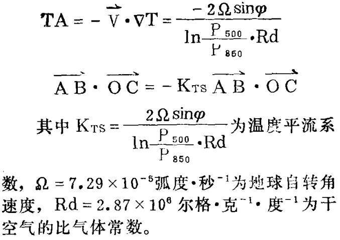
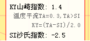

T-lnP图解说明
适用：T-lnP图解
制作人：木土
制作日期：2013-2-2
更新日期：2013-2-11
前言
假定读者具备必要的专业知识（如大气物理、大气热力学），知晓有关术语和概念。本说明不在于指引如何使用图解（也许将来补上），而是告知制作图解的依据，以便读者判断其适用性。
关于本图解
主图为埃玛图解（EMAGRAM）。底图以国家气象局气图5204为原型，部分图件作简化或增强。较原型不同之处主要有：
{kind=link}
- 2种可选纵坐标范围：1050~200hPa和1050~50hPa。
- 纵坐标左轴对应气压，右轴对应位势高度，而原型均对应气压。位势高度根据所显示站的实测数据求算。
- 湿绝热线按假相当位温θse算式（见下“假相当位温”一节）反算绘画。应比原型精确，但非严格。
饱和水汽压（E）
E虽不直接在图解中体现，但几乎所有运算最终都离不开它。E有诸多计算公式，本图解采用Goff-Gratch(1957)公式，但不排除将来会调整。
E公式分水（平）面和冰（平）面2种。通常根据温度确定应用公式，一般0℃以上为水面，-40℃以下冰面，0℃~-40℃之间不确定，《能量天气学》(雷雨顺)设计了一种较“平滑”的划分方法。本图解以0℃为界划分，经观察，画出的饱和比湿线最接近原型。
下列验算表比较了E几个常用公式对计算的影响：
抬升凝结高度（LCL）
在图解上，LCL所在的点其实就是某条饱和比湿线和干绝热线（等位温θ线）的交点，所以可以将等式联立为非线性方程组数值求解：
1) q(e,p)=q(E,p0)，其中，饱和水汽压E=vapor_pressure(Td0) 2) θ(T,p)=θ(T0,p0) 3) T=Td，饱和条件 *) T0,Td0,p0为气块起始上升处的气温、露温和气压，即输入条件；解得LCL点(Tc,pc)，即输出结果。
交点法可控制求解的精度，但经实践用时稍多。迭代法（《天气学诊断分析》，周军）原理与前者相同，用时和精度相当，但控制了迭代次数，就能减少用时。本图解采用近似法和迭代法混合，先执行近似法（124*(T-Td)）迅速靠近真值，再用迭代法细调。 附：抬升凝结高度LCL对比验算表（耗时！）
假相当位温（θse）
图解中气块湿绝热上升/下降均牵涉到θse计算，θse=θ* exp(Lw(Tc)*rs/(Cpd*Tc)，是近似式（见《关于计算湿绝热线的讨论》，李洪勣等）。附Javascript代码片段（仅为代替或补充用文字复述思路，有需要才看，下同）：
//计算假相当位温θse。
//@param T 起始上升处气温。单位：绝对温标K
//@param Td 起始上升处露温。单位：绝对温标K
//@param p 起始上升处气压hPa
//@return 单位K
function thetase(T,Td,p){
var lcl=LCL(T,Td,p), //抬升凝结高度
es=vapor_pressure(Td), //饱和水汽压
ta=theta(T,p-es), //干空气位温
rs=r(es,p); //混合比
return ta*Math.exp(Lw(lcl.T)*rs/(constant.Cpd*lcl.T));
}
//计算水的蒸发(凝结)潜热
//@param T 气温。单位：绝对温标K
//@return 单位J/kg
function Lw(T){
return constant.Lw0-constant.cL*(celsius(T));
}
附：假相当位温θse验算表（耗时！）。
在一些场合，需要知道气块上升/下降到某一等压面的温度。如果气块已饱和（T=Td），则相当于根据θse(T,T,p)=C，已知C和p，求T。通过简单的数值计算可求解：
//给定假相当位温θse和气压，求温度
//@param tse 假相当位温θse(K)
//@param p 指定气压(hPa)
//@return 气温(K)
function thetase_T(tse,p){
var err=.005,t1=AT(24),t2=AT(25); //设定精度范围，任意给定2个已转化为绝对温标的初始解
return fs121.math.secant_1R(_fn_thetase.bind(null,tse,p),t1,t2,err); //以割线法求解。
function _fn_thetase(v0,p,T){
return v0-thetase(T,T,p);
}
}
指数
指数以数值形式提供，不太直观，能与图解融合也许是今后目标。但通常最令人困惑的是，同类的各家产品得出各自不同的结果值，这是由于各产品采用各异的算式（如前述饱和水汽压）、算法（如前述LCL）和策略（如将述的山崎指数）。因此列出求解方法让用者心中有数是必要。
A指数
定义：A=T850-T500-(T850-Td850)-(T700-Td700)-(T500-Td500)
K指数
定义：K=T850-T500+Td850-(T700-Td700)
KY山崎指数
定义：KY=(β*TA-SI+γ)/(α+T850-Td850) （当TA>SI时），KY=0 （当TA≤SI时）
其中，SI为SI指数值，TA为850~500hPa温度平流，α、β和γ为统计参数，本图解中，取α=β=1,γ=0。TA的求取参考《应用KY指数作广州前汛期降水预报》（徐小英等）：

注意：
- 本图解所有站的TA求算皆用此式，（如对南半球站）是否合适请自行判断
- 文中建议广州的TA可以广州（现清远）及阳江、南宁等上游站的TA平均值替代。本图解不可能对每个站做此工作，但提供一些方便：各站的TA值已算好，查好后取平均代入就是。

SI沙氏指数
定义：SI=T500-T’
其中，T’为850hPa等压面上的湿空气块沿干绝热线抬升，到达凝结高度后再沿湿绝热线上升至500hPa时具有的气块温度。算法是先求取湿绝热线值（θse），代入已知的气压（500hPa）反算出温度。附Javascript代码片段：
//计算SI指数
//@param T500 500hPa的温度(K)
//@param T850 850hPa的温度(K)
//@param Td850 850hPa的露温(K)
//@return 数值。如果传入参数有null，返回null
function index_SI(T500,T850,Td850){
if(any_null(arguments))
return null;
var tse=thetase(T850,Td850,850) //从850hPa起始上升到达饱和时的θse，即湿绝热线的值
,T=thetase_T(tse,500); //反算该湿绝热线在500hpa上对应的温度
return T500-T;
}
SWEAT天气强威胁指数
定义：SWEAT=12*Td850 + 20*(TT-49) + 4*WF850 + 2*WF500 + 125*(sin(WD500-WD850)+0.2)，其中：
- TT为全总指数值
- 若算式子项小于0，不算该子项，即值为0
- WF以“m/s”为单位
- 最右的子项必须满足 WD850在130°~250°，WD500在210°~310°，WD500大于WD850，WF850、WF500均大于7.5m/s 时才计算，否则为0
TT全总指数
定义：TT=T850+Td850-2*T500
其它
关于V-3θ名字
位温（θ）、假相当位温（θse）和饱和假相当位温（θse*）垂直廓线组合图，找不到一个标准的名字。国外的文章不见专门名（如《梅雨锋区内中-a尺度对流系统的演变和细结构》，K.Ninomiya等），国内的有称“热态函数廓线”（《关于热态函数廓线特征天气学意义研究》，郝为锋等），也有称“欧阳位温”（MICAPS）。本图解引用“V-3θ”（《天气演化与结构预测》，欧阳首承），配上了高空风（V)，较简洁明了。
附录
关于站点
不确定某些高空测站数据能否公开，因此本图解只列国外同类网站已公布资料（报文或解码处理后的数据、图表）的站。
适用浏览器
图解所有图形都在客户端实时描绘，主要用到Canvas的技术，理论上所有支持HTML5的浏览器都可，如IE9+、Firefox、Opera、Safari、Google Chrome，以及众多未能一一列出的五花八门的浏览器。
有些移动浏览器虽支持HTML5，但使用了代理服务器，如UCWEB、Opera mini，这些浏览器访问本图解只显示出空白的底图，数据链路被代理破坏了。
提一下不错的Safari，苹果已停止支持Windows，目前官网上已找不到其下载链接了，要用Windows版自己去软件园找吧，而且版本停留在5.X。
再罗嗦一下不支持低版IE的原因：IE8及以下版javascript运算速度低下，不支持Canvas，虽加装模块可使其支持的VML“装扮成”Canvas，但效率是硬伤，本图解运算量很大的。
验算和测试
参考书目
- 大气热力学，沈春康，气象出版社，1983
- 大气热力学基础，陈章益，气象出版社，1990
- 大气物理学，盛裴轩、毛节泰、李建国、张霭琛、桑建国，北京大学出版社，2003
- 大气物理学基础，许绍祖主编，气象出版社，1993
- 能量天气学，雷雨顺，气象出版社，1986
- 气象常用参数和物理量查算表，陈创买、郭英琼，气象出版社，1980
- 气象观测报告的解码规则和算法，高华云、应显勋、高峰，气象出版社，2006
- 气象上常用热力学图解，姜达雍，高等教育出版社，1959
- 气象学，曹文俊、王保信、董保群，南京气象学院大气物理系，1986 （内附5204气图为本图解参照的原型）
- 天气分析预报物理量计算基础，刘健文、郭虎、李耀东、刘还珠、吴宝俊主编，气象出版社，2005
- 天气学分析（第二版），寿绍文主编，气象出版社，2006
- 天气学诊断分析，周军编著，南京气象学院，1992重印
- 天气演化与结构预测，欧阳首承，气象出版社，1998
- 关于计算湿绝热线的讨论，李洪勣、雷雨顺，气象科技,1981.06
- 关于热态函数廓线特征天气学意义研究，郝为锋、寇正、苏晓冰、蔡海军、袁明川、黄少飞，解放军理工大学学报（自然科学版），Vol.2 No.2，2001.04
- 梅雨锋区内中-a尺度对流系统的演变和细结构，K.Ninomiya、T.Akiyama、M.Ikawa，韩桂荣、朱定真译，1988（收录于 暴雨研究和试验译文选，海洋出版社，1991）
- 应用KY指数作广州前汛期降水预报，徐小英、郑德娟、黄文忠，气象，1986.04
- 大气科学中的数值方法，葛孝贞，南京大学出版社，1994
- 非线性方程组解法与最优化方法，王德人，人民教育出版社，1982